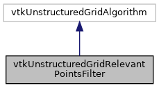

|
ACloudViewer
3.9.4
A Modern Library for 3D Data Processing
|
|
ACloudViewer
3.9.4
A Modern Library for 3D Data Processing
|
#include <vtkUnstructuredGridRelevantPointsFilter.h>


Public Member Functions | |
| vtkTypeMacro (vtkUnstructuredGridRelevantPointsFilter, vtkUnstructuredGridAlgorithm) | |
| void | PrintSelf (ostream &os, vtkIndent indent) |
Static Public Member Functions | |
| static vtkUnstructuredGridRelevantPointsFilter * | New () |
Protected Member Functions | |
| vtkUnstructuredGridRelevantPointsFilter () | |
| ~vtkUnstructuredGridRelevantPointsFilter () | |
| int | RequestData (vtkInformation *, vtkInformationVector **, vtkInformationVector *) |
Definition at line 12 of file vtkUnstructuredGridRelevantPointsFilter.h.
|
inlineprotected |
Definition at line 21 of file vtkUnstructuredGridRelevantPointsFilter.h.
|
inlineprotected |
Definition at line 22 of file vtkUnstructuredGridRelevantPointsFilter.h.
|
static |
Referenced by VtkUtils::NastranFileReader::run().
| void vtkUnstructuredGridRelevantPointsFilter::PrintSelf | ( | ostream & | os, |
| vtkIndent | indent | ||
| ) |
Definition at line 143 of file vtkUnstructuredGridRelevantPointsFilter.cpp.
|
protected |
Definition at line 40 of file vtkUnstructuredGridRelevantPointsFilter.cpp.
References NULL.
| vtkUnstructuredGridRelevantPointsFilter::vtkTypeMacro | ( | vtkUnstructuredGridRelevantPointsFilter | , |
| vtkUnstructuredGridAlgorithm | |||
| ) |